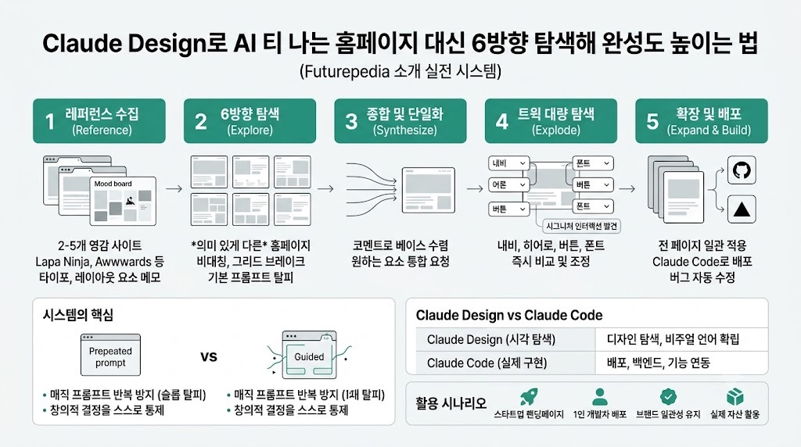

FuturepediaMORNING DIGEST · 2026-09-03 · Futurepedia🎬 영상
Claude Design로 AI 티 나는 홈페이지 대신 6방향 탐색해 완성도 높이는 법
Futurepedia가 소개하는 Claude Design 실전 시스템: 레퍼런스→탐색→종합→트윅→배포까지 한 번에 코드로 연결

01핵심 개요
Claude Design(claude.ai/design)은 유료 Claude 구독에 포함된 웹사이트 디자인 도구, 기본 프롬프트만 쓰면 매번 비슷한 "AI 슬롭" 결과가 나옴
해법은 5단계 시스템: Reference(레퍼런스 2~5개 취향보드) → Explore(6개의 서로 다른 홈페이지 방향 생성) → Synthesize(마음에 드는 요소 종합) → Explode(트윅으로 세부 옵션 대량 탐색) → Expand(나머지 페이지 확장) → Build(Claude Code로 배포)
시연 사례는 "Flow Room"이라는 AI 비디오 편집 플랫폼 가상 브랜드, 로고·히어로 이미지는 ChatGPT로 별도 생성해 투입
완성된 사이트는 Cloud Code로 GitHub 푸시 후 Vercel(영상 내 "Verscell"로 발음) 배포까지 이탈 없이 진행, 배포 중 발견된 버그도 자동 수정됨
02핵심 주장 / 논점 구조
"매직 프롬프트로 AI 디자인 슬롭을 피하는 게 아니라, 창의적 결정을 스스로 통제하는 시스템을 쓰는 것"이 영상의 핵심 메시지
단순 프롬프트("이 브랜드로 웹사이트 만들어줘")를 10번 반복해도 거의 동일한 결과가 나온다는 것이 문제의 근거로 제시됨
반대로 레퍼런스 취향보드 + "6개의 의미 있게 다른 홈페이지 방향(6 meaningfully different homepage directions, not six color variations)"을 명시적으로 요구하면 매번 다른 결과가 나옴
트윅(tweaks) 기능이 Claude Code에서 반복하면 오래 걸릴 세부 조정(내비 스타일, 히어로 레이아웃, 버튼 모션 등)을 드롭다운으로 즉시 탐색 가능하게 해준다는 점을 "옵션+트윅 조합이 Claude Code보다 나은 이유"로 강조
035단계 워크플로우 상세
1단계 Reference(레퍼런스 수집): 2~5개의 레퍼런스를 모으고 각각에서 마음에 드는 요소(예: A의 타이포그래피, B의 히어로 구성, C의 내비바)를 메모. 참고 소스로 Lapa Ninja(랜딩페이지 데이터베이스, 업종·스타일 필터 가능), Landbook, Awwwards(3D·몰입형 스크롤 사이트), Pinterest(폭넓은 영감), React Bits·21st.dev(카드·캐러셀·버튼 등 개별 컴포넌트)를 제시
2단계 Explore(탐색): 프로덕트 설명, 핵심 기능, 실제 자산(제품 사진, 포트폴리오, 로고)과 레퍼런스 노트를 프롬프트에 채워 "6개의 서로 다른 홈페이지 방향"을 생성 요청. 비대칭, 특이한 네거티브 스페이스, 그리드 브레이크 등 기본값에서 벗어난 요소를 명시적으로 요구
3단계 Synthesize(종합): 6개 옵션 각각에 코멘트를 달아 마음에 드는 부분(타이포그래피, 배경 확장, 특정 카드 등)을 지정한 뒤 "각 코멘트가 달린 요소를 통합한 새 옵션"을 요청해 하나의 베이스 방향으로 수렴
4단계 Explode(트윅 폭발): 선택한 방향(예: "2A")을 기준으로 "많은 트윅을 탐색"하도록 요청. 내비 스타일(글래스 필, 미니멀 인라인, 보더드 레일, 센터 로고), 히어로 레이아웃(센터드, 에디토리얼 스플릿), 제품 프레젠테이션(프레임드 패널, 틸티드 플로트, 풀 블리드), 피처 섹션 레이아웃(벤토 등), CTA 바 스타일, 버튼 필/모양, 폰트 크기·간격, 액센트 컬러까지 드롭다운으로 즉시 비교
5단계 Expand(확장): 확정된 홈페이지를 "시각적 소스 오브 트루스"로 삼아 내비의 각 항목에 대응하는 나머지 페이지(가격 페이지 등)를 일괄 생성, 별도 반복 없이도 동일한 타이포그래피·카드 스타일·컴포넌트가 전 페이지에 일관 적용됨
04인터랙션 트윅과 시그니처 모먼트
사이트를 "더 폴리시되고 살아있게" 만들기 위한 2차 트윅 라운드에서 호버 상태, 버튼 프레스, 스크롤 트리거 리빌, 서틀 패럴랙스 등 옵션을 탐색
버튼 모션은 "리프트 앤 글로우(lift and glow)", "샤인 스윕(shine sweep)", "프레스 인(press in)" 중 리프트 앤 글로우를 채택
편집 플랫폼이라는 제품 맥락에 맞춰 플레이헤드, 타임코드 틱, 파형(waveform) 등 아이디어가 제시됐고, 그중 CTA 버튼 아래 배치한 파형에 "커서가 반응하는 인터랙티브 버전"을 최종 채택
원칙으로 "서틀한 인터랙션을 기본으로 유지하되, 시그니처 인터랙션 하나만 강하게(one big one, everything else subtle)"를 제시, 과도한 인터랙션은 산만해진다고 경고
05전략적 의미
디자인 산출물의 다양성은 프롬프트 한 방이 아니라 "명시적으로 여러 방향을 요구 + 좁혀가는 반복 구조"에서 나온다는 점을 재확인시키는 사례
Claude Design(탐색·비주얼 결정)과 Claude Code(실제 구현·배포)의 역할 분리를 명확히 제시 — 디자인 단계의 세부 반복은 Design에서, 백엔드·DB·결제 API 연동 등 실제 기능은 Code로 이관
디자인 시스템(design system) 생성 기능은 팀 작업이나 여러 프로젝트에 걸친 비주얼 언어 재사용이 필요할 때만 권장, 단일 사이트 제작에는 불필요하다고 구분
06배포 워크플로우 (Claude Design → Claude Code → 라이브)
Design에서 "Share → More formats → Cloud Code" 경로로 나오는 프롬프트를 그대로 붙여넣기보다, zip 파일을 다운로드해 로컬 폴더로 압축 해제 후 Claude Code(데스크톱 앱)의 작업 폴더로 지정하는 방식을 권장(원래 프롬프트의 MCP 다운로드 지시는 zip을 이미 받았으므로 생략)
Claude Code가 배포 방식을 질문하면 권장 옵션을 선택, 빌드 완료 후 인앱 브라우저로 미리보기 가능
라이브 전환은 2단계: GitHub에 코드 푸시 → Vercel로 배포, GitHub·Vercel 커넥터 연결과 양쪽 무료 계정만 있으면 Claude Code를 벗어나지 않고 전 과정 진행
배포 단계에서 Claude Code가 코드 내 버그를 자체 발견해 수정 후 재배포까지 자동 수행했다고 언급
07활용 시나리오
스타트업 창업자가 SaaS 랜딩페이지를 만들 때: 2~5개 경쟁사/영감 사이트를 레퍼런스로 모으고, 6방향 탐색 후 좋아하는 요소만 종합해 짧은 시간에 차별화된 홈페이지 확보
1인 개발자가 프로덕트를 배포까지 완결하고 싶을 때: Design에서 비주얼을 확정한 뒤 Claude Code로 넘겨 코드 지식 없이도 GitHub·Vercel 연동까지 진행 가능(영상은 "개발자가 아니어도 사용할 수 있다"고 강조하되 학습에 시간이 든다고 단서를 붙임)
팀/에이전시가 여러 프로젝트에 일관된 브랜드 언어를 유지해야 할 때: 홈페이지 확정 후 디자인 시스템으로 승격해 프레젠테이션·애니메이션 등 다른 산출물에도 재사용
브랜드 자산(제품 사진, 로고, 헤드샷)이 이미 있는 경우 이를 레퍼런스와 함께 투입해 Claude가 "실제 제품 기준으로" 디자인하도록 유도, 이미지와 충돌하는 디자인 생성을 방지
08현황 및 전망
Claude Design은 claude.ai/design에서 유료 Claude 구독자에게 제공되는 기능으로, 웹사이트 외에도 피치덱, 경쟁사 스크린샷 기반 랜딩페이지, 소셜미디어 템플릿, 모션 그래픽까지 커버하는 템플릿·프롬프트 세트를 별도 무료 가이드로 제공한다고 언급(설명란 링크)
영상은 후속으로 "Claude Code 전체 튜토리얼" 영상을 안내하며, Design과 Code를 잇는 워크플로우 콘텐츠가 채널 내 시리즈로 이어지고 있음을 시사
자막은 유튜브 자동/수동 자막(source: subs:en) 기준이며 화면 UI 조작을 말로 설명하는 방식이라, 정확한 버튼 명칭·메뉴 위치는 실제 화면과 다소 차이가 있을 수 있음(예: Vercel이 "Verscell"로 표기됨은 음성 인식 오기로 추정)
09용어 사전
Claude Design: Claude 유료 구독에 포함된 웹/프레젠테이션 디자인 생성 도구(claude.ai/design), 레퍼런스 기반 다중 방향 탐색과 트윅 기능 제공
레퍼런스 취향보드(taste board): 디자인 착수 전 2~5개 참고 사이트에서 마음에 드는 요소만 뽑아 정리한 보드, AI 슬롭 방지의 출발점
트윅(Tweaks): 확정된 방향 안에서 내비 스타일·레이아웃·버튼 모션 등 세부 옵션을 드롭다운으로 즉시 비교·전환하는 기능
디자인 시스템(Design System): 여러 프로젝트·산출물에 걸쳐 일관된 비주얼 언어(타이포그래피, 컬러, 컴포넌트)를 재사용하기 위한 저장 단위
AI 디자인 슬롭(AI design slop): 기본 프롬프트만으로 생성해 어디서나 비슷하게 보이는 전형적인 AI 생성 디자인을 가리키는 표현
시그니처 인터랙션: 사이트 전반은 서틀한 모션으로 유지하되 한 곳에만 강하게 넣는 임팩트 있는 인터랙션(예: 커서 반응형 파형)